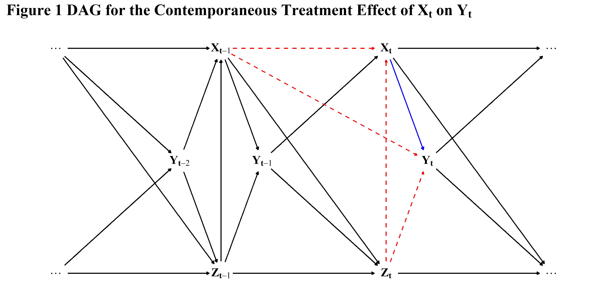
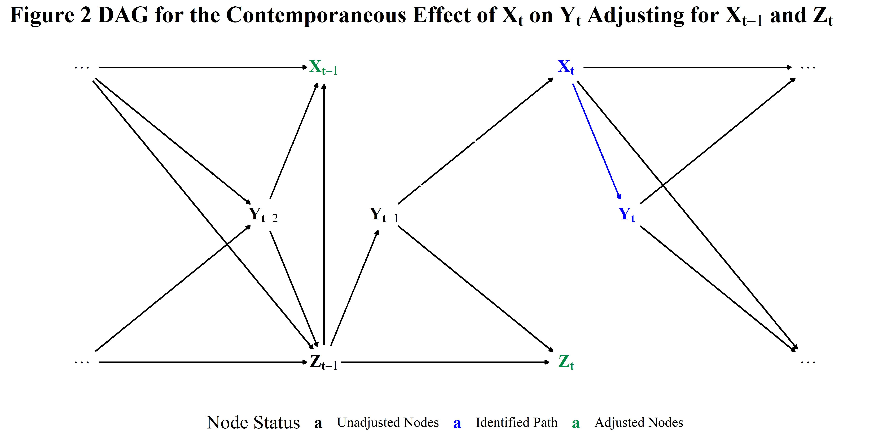

Data simulation is easily near the top of the long list of useful skills that are seldom taught in social science graduate programs. This is unfortunate given the central role of simulation in model checking, sensitivity analysis, and developing a basic understanding of modeling assumptions and often complex relationships between the phenomena social scientists aspire to understand. My aim in this blog post is thus to provide a basic introduction to data simulation and parameter recovery in R for cross-sectional time series and non-nested data structures commonly encountered in political science and international relations.
Directed Acylic Graphs (DAGs) provide a useful way for thinking about both simple and more complex relationships and dependencies among variables and it can often be helpful to graph out a structural model of the relationships you want to simulate. The {dagitty} and {ggdag} packages provide a straight forward approach to constructing DAGs directly R and I rely on them for the purposes herein (Barrett 2021; Textor et al. 2016). Imagine we are interested in estimating the causal effect of some time varying treatment \(X_{t}\) on a continuous response \(Y_{t}\) where the realized values of \(X\) and \(Y\) for each period \(t \in \{1,2,\dots,T\}\) and unit \(j \in \{1,2,\dots,J\}\) are a function of the treatment status for country \(j\) at time \(t-1\) and a vector of time varying confounders \(Z_{t}\). The figure below, loosely adapted from Blackwell and Glynn (2018), depicts such a data generation process.
# Load the necessary libraries
pacman::p_load(
"tidyverse",
"data.table",
"dtplyr",
"dagitty",
"ggdag",
"kableExtra",
install = FALSE
)
# Specify the DAG for the data generation process
sim_dag <- dagify(
x_t ~ x_tm1 + z_t + y_tm1,
x_tm1 ~ x_tm2 + z_tm1 + y_tm2,
x_t1 ~ x_t + y_t,
z_t ~ z_tm1 + x_tm1 + y_tm1,
z_tm1 ~ z_tm2 + x_tm2 + y_tm2,
z_t1 ~ z_t + x_t + y_t,
y_t ~ x_t + x_tm1 + z_t,
y_tm1 ~ x_tm1 + z_tm1,
y_tm2 ~ x_tm2 + z_tm2,
coords = list(
x = c(z_tm2 = -1, z_tm1 = 0, z_t = 1, z_t1 = 2, x_tm2 = -1,
x_tm1 = 0, x_t = 1, x_t1 = 2, y_tm1 = 0.25, y_t = 1.25,
y_tm2 = -0.25),
y = c(z_tm2 = 0, z_tm1 = 0, z_t = 0, z_t1 = 0, x_tm2 = 4,
x_tm1 = 4, x_t = 4, x_t1 = 4, y_tm1 = 2, y_t = 2, y_tm2 = 2)
),
labels = c(z_tm2 = "bold(...)", x_tm2 = "bold(...)",
z_t1 = "bold(...)", x_t1 = "bold(...)",
x_tm1 = "bold(X[t - 1])", x_t = "bold(X[t])",
z_tm1 = "bold(Z[t - 1])", z_t = "bold(Z[t])",
y_tm1 = "bold(Y[t - 1])", y_t = "bold(Y[t])",
y_tm2 = "bold(Y[t - 2])"),
exposure = c("x_t"),
outcome = c("y_t")
) %>%
# Create a tidy data frame from the DAG
tidy_dagitty() %>%
# Set Node Status
node_status() %>%
# Set node adjacency
node_ancestors(.var = "y_t") 
There’s quite a bit going on here, so let’s break it down a bit. First, the solid blue line in figure 1 represents the causal path of interest \(X_{t} \longrightarrow Y_{t}\). The dashed red lines indicate confounding paths–nodes that have a direct effect on both the outcome and the treatment–that need to be adjusted for to identify the contemporaneous effect of \(X\) on \(Y\) at each period \(t\). As depicted in the DAG, the lag of the treatment \(X_{t-1}\) and the vector time-varying confounders \(Z_{t}\) constitute the minimum sufficient adjustment set necessary to identify the path \(X_{t} \longrightarrow Y_{t}\). This is further illustrated in figure 2 below which shows the adjusted nodes in green, the causal path \(X_{t} \longrightarrow Y_{t}\) in blue, and nodes we do not need to adjust for to identify the effect of \(X\) on \(Y\) at time \(t\) in black.

We can also more directly verify sufficiency of the set \(\{X_{t-1}, Z_{t}\}\) using the adjustmentSets function from the {dagitty} package.1
# Verify the minimum adjustment using dagitty
adjustmentSets(sim_dag$dag, exposure = "x_t", outcome = "y_t")
## { x_tm1, z_t }While this is all rather abstract, it provides a useful way to think about potentially complex relationships between variables and how they all do or don’t fit into a particular model.
Having specified our dependencies and identified the main parameter(s) we intend to recover, the effect of \(X_{t}\) on \(Y_{t}\) at time \(t\), we can simulate a series of datasets with dimensions similar to those encountered in real world social science applications. To begin, let’s specify the dimensions for each dataset as a tibble with two columns, Countries and Periods, and expand it by each possible combination. We’ll then add two additional columns, a unique identifier for each dataset and its total number of observations.
# Define the Dimensions for the Simulated Data
sim_dims <- tibble(
Countries = seq(10, 85, 25), # Number of Countries
Periods = seq(12, 57, 15) # Number of Time Periods
) |>
# Expand the data for each combinations of dimensions
expand(Countries, Periods) |>
# Add Total Observations and a dataset ID
mutate(N = Countries*Periods, data_id = 1:n())
# Print the data
head(sim_dims)
## # A tibble: 6 x 4
## Countries Periods N data_id
## <dbl> <dbl> <dbl> <int>
## 1 10 12 120 1
## 2 10 27 270 2
## 3 10 42 420 3
## 4 10 57 570 4
## 5 35 12 420 5
## 6 35 27 945 6To simulate the data for each combination of dimensions we can nest each row in the tibble by its country-period pair and then loop across performing the necessary operations via the map function from {purrr}. This approach is more computationally efficient in R than using for loops and relies primarily on the {tidyverse} package suite, though the difference is probably negligible for the purposes of this example. I assume the baseline data for each of the parameters follows a normal distribution with mean \(\mu_{j}\) and standard deviation \(\sigma_{j}\) where \(\mu_{j} \sim \mathcal{N}(0, 1)\) and \(\sigma_{j} \sim \mathcal{Exponential}(\lambda = 0.5)\) for each country \(j\).
# Set the rng seed to ensure values are reproducible
set.seed(123456)
sim_data <- sim_dims |>
# Nest the tibble by dataset
nest(data = c(Countries, Periods)) |>
# Simulate each of the datasets
mutate(datasets = map(
.x = data,
~ .x |>
# Expand the data intol panel format
expand_grid(country = 1:Countries, period = 1:Periods) |>
# Group the data by country
group_by(country) |>
# Simulate baseline values for the parameters
mutate(
# Baseline Values for Z
Z_base = rnorm(n(), rnorm(1, 0, 1), rexp(1, 0.5)),
# Baseline Values for X
X_base = rnorm(n(), rnorm(1, 0, 1), rexp(1, 0.5)),
# Baseline Values for Y
Y_base = rnorm(n(), rnorm(1, 0, 1), rexp(1, 0.5)),
# Lagged Baseline Values for Each of the Parameters
across(
ends_with("_base"),
.fns = list(
lag_1 = ~ lag(.x, n = 1L),
lag_2 = ~ lag(.x, n = 2L)
),
.names = "{.col}_{.fn}"
),
# Floor periods at 3 to accomodate the dropped lags
across(c(period, Periods), ~ .x - 2)
) |>
# Ungroup the data
ungroup() |>
# Drop missing values
drop_na()
)) |>
# Unnest the dimensions columns
unnest(cols = data)
# Print the first dataset
head(sim_data$datasets[[1]])
## # A tibble: 6 x 13
## Countries Periods country period Z_base X_base Y_base Z_base_lag_1
## <dbl> <dbl> <int> <dbl> <dbl> <dbl> <dbl> <dbl>
## 1 10 10 1 1 -2.44 3.85 -0.845 -1.30
## 2 10 10 1 2 -1.59 -0.139 0.845 -2.44
## 3 10 10 1 3 1.43 3.06 2.29 -1.59
## 4 10 10 1 4 3.80 -2.57 3.61 1.43
## 5 10 10 1 5 4.00 0.773 -0.781 3.80
## 6 10 10 1 6 -1.31 2.26 -1.36 4.00
## # ... with 5 more variables: Z_base_lag_2 <dbl>, X_base_lag_1 <dbl>,
## # X_base_lag_2 <dbl>, Y_base_lag_1 <dbl>, Y_base_lag_2 <dbl>Now that we have a dataset with baseline values of \(X\), \(Z\), \(Y\), and their lags for each of combination of dimensions, we can simulate “true” coefficient values for each of the vectors at time \(t\) and \(t - 1\). In a real simulation study you would likely want to assign fixed values to the nuisance parameters and vary the magnitude of the effect of the treatment on the response but for the purpose here I’m just going to generate a vector of twenty random numbers from a uniform distribution.
# Simulate a vector of "true" coefficient values for each parameter
beta <- runif(20, -5, 5)We can then simulate the parameters of interest by simply following the paths on the DAG in figure 1 for each parameter, working our way from left to right. Alternatively, we could pass each of the parameters to the ggdag::ggdag_parents or dagitty::parents convenience functions to identify the parents of each node and specify the relationships accordingly.
# Character vector specifying nodes on the graph
params <- c("x_tm1", "z_tm1", "y_tm1", "x_t", "z_t", "y_t")
# Get the parents for each node
parent_nodes <- map(.x = params, ~ parents(sim_dag$dag, .x))
# Set names for the nodes
names(parent_nodes) <- params
# Print the parents for node X[t-1]
parent_nodes$x_tm1
## [1] "x_tm2" "y_tm2" "z_tm1"The output tells us that \(X_{t-1}\) is a function of \(X_{t-2}\), \(Y_{t-2}\), and \(Z_{t-1}\) which we can express as its own equation along the lines of \(X_{t-1} \sim \beta_{0} + \beta_{1}X_{t-2} + \beta_{2}Y_{t-2} + \beta_{3}Z_{t-1}\). We can repeat this process for each of the relationships defined in the DAG as shown in the code below.
# Simulate the model dependencies based on the DAG
sim_df <- sim_data |>
mutate(
datasets = map(
.x = datasets,
~ .x |>
transmute(
# Identifiers
across(Countries:period, ~ .x),
# Data for Y[t-2] ~ Y_Lag_2_Base + 5.914*Z[t-2] + -3.570*X[t-2]
Y_Lag_2 = Y_base_lag_2 + 5.914*Z_base_lag_2 + -3.570*X_base_lag_2,
# Data for Z[t-1] ~ Z_Lag_Base + X[t-2]*beta[1] + Y[t-2]*beta[2] + Z[t-2]*beta[3]
Z_Lag = Z_base_lag_1 + Z_base_lag_2*beta[1] + Y_Lag_2*beta[2] + X_base_lag_2*beta[3],
# Data for X[t-1] ~ X_Lag_Base + X[t-2]*beta[4] + Y[t-2]*beta[5] + Z[t-2]*beta[6]
X_Lag = X_base_lag_1 + X_base_lag_2*beta[3] + Y_Lag_2*beta[5] + Z_Lag*beta[6],
# Data for Y[t-1] ~ Y_Lag_Base + X[t-1]*beta[7] + Z[t-1]*beta[8] + Noise
Y_Lag = Y_base_lag_1 + X_Lag*beta[7] + Z_Lag*beta[8] + rnorm(n(), 0, 1),
# Data for Z[t] ~ Z_Base + X[t-1]*beta[9] + Z[t-1]*beta[10] + Y[t-1]*beta[11] + Noise
Z = Z_base + X_Lag*beta[9] + Z_Lag*beta[10] + Y_Lag*beta[11] + rnorm(n(), 0, 1),
# Data for X[t] ~ X_Base + X[t-1]*beta[12] + Z[t]*beta[13] + Y[t-1]*beta[14] + Noise
X = X_base + X_Lag*beta[12] + Z*beta[13] + Y_Lag*beta[14] + rnorm(n(), 0, 1),
# Data for Y[t] ~ Y_Base + X[t]*beta[15] + X[t-1]*beta[16] + Z[t]*beta[17] + Noise
Y = Y_base + X*beta[15] + X_Lag*beta[16] + Z*beta[17] + rnorm(n(), 0, 1)
)
))
# Print the first dataset
head(sim_df$datasets[[1]])
## # A tibble: 6 x 11
## Countries Periods country period Y_Lag_2 Z_Lag X_Lag Y_Lag Z X
## <dbl> <dbl> <int> <dbl> <dbl> <dbl> <dbl> <dbl> <dbl> <dbl>
## 1 10 10 1 1 -1.20 -2.07 2.01 -2.33 4.71 47.0
## 2 10 10 1 2 -18.7 -31.9 -36.9 10.2 167. 623.
## 3 10 10 1 3 -29.0 -50.1 -66.9 28.0 256. 850.
## 4 10 10 1 4 -8.07 -13.4 -17.6 9.29 64.1 197.
## 5 10 10 1 5 -0.180 7.77 4.84 4.76 -48.2 -240.
## 6 10 10 1 6 35.3 66.1 87.1 -36.4 -337. -1123.
## # ... with 1 more variable: Y <dbl>Now that we’ve simulated the data, let’s check the true parameter values for \(\beta_{15}\) so we know what we’re aiming for.
# Check the parameter values for Y
beta[15:17]
## [1] -2.3038987 0.2084644 0.8897939If everything is specified correctly, the data generation process for \(Y_{t}\) should be \(\beta_{0} -2.30 \cdot X_{t} + 0.21\cdot X_{t-1} + 0.89\cdot Z_{t} + \epsilon\) where the causal effect of \(X\) on \(Y\) at time \(t\) is approximately \(-2.30\). The function bias_table simply loops across each of the simulated data frames, estimating the specified models, and returning a tibble containing the estimates and absolute bias. As table 1 illustrates, we’re able to recover the true parameter value suggesting everything worked as intended.
param_recovery <- bias_table(
.ols_equation = Y ~ X + X_Lag + Z,
.fe_equation = Y ~ X + X_Lag + Z + as.factor(country),
.re_equation = Y ~ X + X_Lag + Z + (1 | country),
.data_list = sim_df$datasets,
.term = "X",
.truth = beta[15]
)|
Parameter Estimates
|
||||||||
|---|---|---|---|---|---|---|---|---|
|
Dimensions
|
Complete Pooling
|
No Pooling
|
Partial Pooling
|
|||||
| Countries | Periods | N | Estimate | Bias | Estimate | Bias | Estimate | Bias |
| 10 | 10 | 100 | -2.3320 | 0.0281 | -2.2811 | 0.0228 | -2.3083 | 0.0044 |
| 10 | 25 | 250 | -2.3525 | 0.0486 | -2.2319 | 0.0720 | -2.2449 | 0.0590 |
| 10 | 40 | 400 | -2.3320 | 0.0281 | -2.2926 | 0.0113 | -2.3018 | 0.0021 |
| 10 | 55 | 550 | -2.3665 | 0.0626 | -2.3215 | 0.0176 | -2.3250 | 0.0211 |
| 35 | 10 | 350 | -2.3096 | 0.0057 | -2.2329 | 0.0710 | -2.2675 | 0.0364 |
| 35 | 25 | 875 | -2.3124 | 0.0085 | -2.2666 | 0.0373 | -2.2769 | 0.0270 |
| 35 | 40 | 1400 | -2.3317 | 0.0278 | -2.3099 | 0.0060 | -2.3184 | 0.0145 |
| 35 | 55 | 1925 | -2.3333 | 0.0294 | -2.3113 | 0.0074 | -2.3165 | 0.0126 |
| 60 | 10 | 600 | -2.3655 | 0.0616 | -2.2844 | 0.0195 | -2.3245 | 0.0206 |
| 60 | 25 | 1500 | -2.3308 | 0.0269 | -2.2773 | 0.0266 | -2.2879 | 0.0160 |
| 60 | 40 | 2400 | -2.3435 | 0.0396 | -2.2992 | 0.0047 | -2.3070 | 0.0031 |
| 60 | 55 | 3300 | -2.3462 | 0.0423 | -2.3143 | 0.0104 | -2.3202 | 0.0163 |
| 85 | 10 | 850 | -2.3183 | 0.0144 | -2.2686 | 0.0353 | -2.2970 | 0.0069 |
| 85 | 25 | 2125 | -2.3288 | 0.0249 | -2.2892 | 0.0147 | -2.3023 | 0.0016 |
| 85 | 40 | 3400 | -2.3294 | 0.0255 | -2.3009 | 0.0030 | -2.3090 | 0.0051 |
| 85 | 55 | 4675 | -2.3430 | 0.0391 | -2.3066 | 0.0027 | -2.3126 | 0.0087 |
| 1 Bias is the difference between the true value of the parameter and the estimated coefficient for each dataset in absolute terms. The true parameter value for the effect of \(X_{t}\) on \(Y_{t}\) is approximately -2.3039. | ||||||||
And there you have it, a basic introduction to simulating data and parameter recovery using DAGs and the tidyverse. I’ll probably do a follow-up post in a few weeks that covers simulating discrete parameters such as binary treatments and responses. You can find all of the code not shown for the sake of brevity on my github
This could also be obtained via {ggdag}’s dag_adjustment_sets or visually via ggdag_adjustment_set. See the {ggdag} package site for more details↩︎